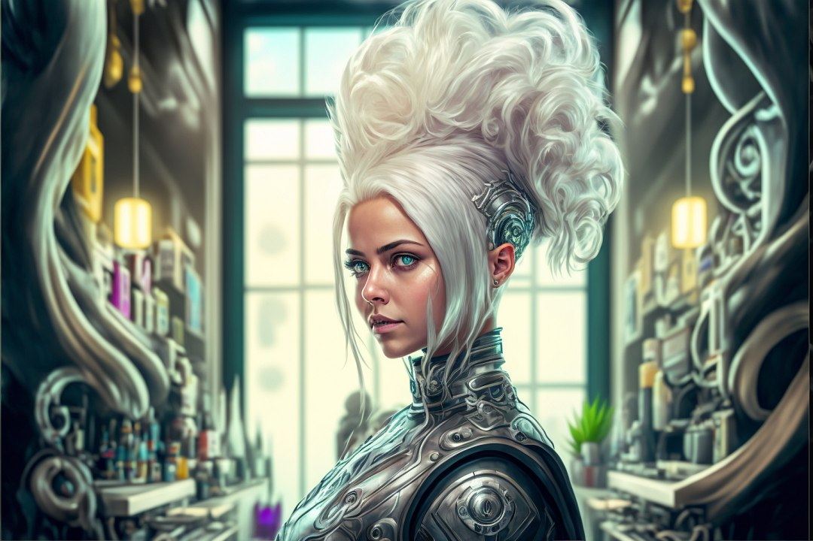

sprawi, że twoje włosy odżyją, a w krótkim czasie ta zmiana zacznie być widoczna i w długości, i w gęstości naturalnych siwych włosów na twojej osobistej głowie.
Czy to nie piękne, że po latach katowania swoich włosów, skóry głowy, a pośrednio także i całego organizmu ciężką chemią pt. farba, dajesz sobie właśnie szansę na powrót, taki prawdziwy powrót do czasów sprzed położenia na dziewicze włosy pierwszego ever koloru? Wracasz do natury, do początku, wracasz do siebie! Pamiętasz, jak wtedy wyglądały twoje włosy? Pamiętasz, jaki był twój naturalny kolor przed pierwszą w życiu farbą?
Ja sama słabo pamiętałam. Po pierwsze wydawało mi się, że nawet jeśli pozwolę swoim włosom odrosnąć naturalnie do pożądanej długości w ich oryginalnym kolorze, to już nie będzie to samo, co miałam na głowie 20 lat temu. I nie jest, bo siwego jakby trochę więcej niż wtedy. Po drugie – nie sądziłam, że jest choćby cień szansy, żebym odzyskała to, co lata temu zapewniało mi sporą rozpoznawalność we wsi i okolicach, a także i osobistą dumę – gęstą lwią grzywę. I tu się pomyliłam, bo naturalnych siwych włosów rośnie mi całe mnóstwo!
Ale początki nie były łatwe. Moją główną motywacją do pożegnania się z koloryzacją była tragiczna kondycja włosów tuż przed tą decyzją. Włosy leciały na potęgę, na skroniach zaczęły pojawiać się prześwity, a linia włosów niepokojąco szybko przesuwała się w górę czoła. Nie wyglądało to dobrze. I choć dziś wiem, że powodów tego było co najmniej kilka, wiem też, że farbując dalej włosy nie byłabym dziś tu, gdzie jestem. Także jeśli chodzi o stan i gęstość mojej, bądź co bądź, lwiej grzywy :)
A gdyby tak czymś „podkręcić” ten stan, sprawić, żeby włosy nasyciły się brakującymi składnikami odżywczymi, żeby dostały kopa i zaczęły rosnąć nieco gęściej, zamarzyło się mojej osobie. Było nie było, dajem suple!
Uwaga, ogłoszenie:
Nie mam prawa ani nie zamierzam polecać nikomu niczego do połykania na własną odpowiedzialność, a już na pewno niczego, co można kupić w aptece. Każda witamina, każdy suplement czy inny wyrób medyczny ma załączoną do opakowania ulotkę, z którą bezwzględnie należy się zaznajomić przed zaaplikowaniem sobie jakiegokolwiek specyfiku, a idealnie byłoby skonsultować się ze specjalistą w danej dziedzinie.
Koniec ogłoszenia.
Poniżej krótka lista tego, co ja sobie aplikowałam, aby wygląd i gęstość mojej grzywy w ciągu ostatnich 16 miesięcy osiągnęły zadowalający mnie efekt:
- kompleks witamin z grupy B, końska dawka
- biotyna z cynkiem, dawka jak dla słonia afrykańskiego – wymiennie z B complex, tam też było duuużo biotyny
- żelazo
- kolagen morski, różne rodzaje
- aminokwasy, różne rodzaje
- siarka organiczna
- witamina D3+K2
- kwasy omega 3
- witamina C
- magnez – w postaci chlorku i w tabletkach
- jod z płynu Lugola – suplementowany przez skórę (jest mnóstwo przystępnych artykułów w sieci na ten temat, chętnym gorąco polecam się zapoznać).
Powyższe suplementy (celowo nie podaję nazw własnych preparatów) biorę przez cały czas z niezbędnymi przerwami. Organizm odwdzięcza mi się dobrym zdrowiem i samopoczuciem, a także wściekłym wzrostem naturalnych siwych włosów, mocnymi paznokciami, gęstymi brwiami i rzęsami oraz całkiem niezłym stanem cery w bonusie.
Tak. Suplementy w moim przypadku działają, potrzebna jest tylko regularność i nierzadko długotrwała nimi kuracja. W widoczny sposób wpływają pozytywnie na stan świeżo wyrosłych naturalnych siwców, zahamowują wypadanie włosów, wysycają cały organizm brakującymi witaminami i składnikami odżywczymi. U mnie widać baby hair dosłownie na całej głowie, łysiejące skronie pięknie porosły nowym włosiem, a linia włosów na czole jakby nieco się zniżyła. Minus suplementacji na porost włosów na głowie – włosy gęsto rosną wszędzie. Wszędzie :)
Jeśli zaś nie masz ochoty ani wskazań do suplementacji doustnej, fajnie jest wspomóc wzrost naturalnych siwych włosów specyfikami aplikowanymi na skórę głowy. Tu wybór jest ogromny, nic tylko testować na sobie. Wcierki, odżywki, olejki, mgiełki, ampułki, masażery, szczotki pobudzające krążenie w skórze głowy i dotlenienie cebulek itd.
Jeśli chodzi o moją osobę, po kilku próbach i błędach najbardziej polubiłam się z naturalnymi estońskimi preparatami stylizowanymi na syberyjskie. Mają bardzo dobre składy i mam pewność, że naprawdę pozytywnie działają na moje świeżo wyrosłe (i te jeszcze nie wyrosłe) siwce. Testowałam odżywki, mgiełki o zapachu coca coli używam od ładnych paru lat, a ostatnio sprawdzałam malinową wcierkę i olejek w ampułkach. Wzrost baby hair nad czołem po zastosowaniu tych specyfików jest błyskawiczny, z tygodnia na tydzień widać, jak szybko potrafią rosnąć dobrze nawiezione włosy. Osobiście bardzo polecam do przetestowania.
Podsumowując posty o pielęgnacji naturalnych siwych włosów – dbanie na serio o jakość tego, co nam wyrośnie po zaprzestaniu regularnego farbowania, to dość skomplikowana kwestia (ale też bez przesady :). Po pierwszym szoku, jakim w pewnym momencie będzie wygląd naturalnych siwców i tego, jak bardzo będą się one różnić od włosia farbowanego/rozjaśnianego latami, wpadnięcie w nową ruytnę i używanie nieco innych niż dotychczas kosmetyków jest tylko kwestią czasu i przyzwyczajenia.
Najważniejszym krokiem będzie oczywiście twoja decyzja o tym, że koniec z farbowaniem. Cała reszta naturalnie sama się ułoży. Gorąco zachęcam, by przynajmniej spróbować. Powodzenia, Białogłowo!
Nikogo, kto lubi farbować włosy, nie namawiam do zaprzestania, ale jeśli myślisz o powrocie do czasów sprzed farby, o pokazaniu światu swojej indywidualności, mam nadzieję, że znajdziesz u mnie inspirację, by przynajmniej spróbować :)
Zresztą, czy dbanie o włosy w ogóle może być aż taką oczywistością, że nie warto o tym pisać, a włosomaniacze blogi służą li tylko do wpisów sponsorowanych i reklam odżywek?
Nie wydaje mię się. Po pierwsze – świadomości tego, czym traktujemy naszą osobistą grzywę, nigdy za wiele, a po drugie – tak, jak niewiele pisze się dobrze o naturalnej siwiźnie, tak samo ze świecą szukać porad na temat tego, jak prawidłowo o nią dbać.
A zatem od początku – naturalny siwy włos jest jak słomka do napojów. Brak barwnika w takim włosie, oprócz oczywistego efektu wizualnego, powoduje, że jest on bardziej wrażliwy na otoczenie i jego wpływy niż, nazwijmy to, włos „kolorowy”.
Siwiec łatwiej żółknie. Szarzeje nieładnie. Łapie wszystkie kolory tęczy z nakładanych nań masek, odżywek i płukanek. Ciągnie jak gąbka całą tablicę Mendelejewa z chlorowanej wody basenowej (by kilka minut później, wystawiony na ostre słońce, zzielenieć pod wpływem promieni UV). Rumieni się (niczym niezabezpieczony) pomiędzy nagrzanymi do 230 stopni płytkami prostownicy, rzecz jasna, ceramicznej (pozdrawiam czytelniczki prozy Michała Witkowskiego sprzed okresu celebryckiego).
Ogólnie brzydnie. Szpeci. Nie dodaje uroku właścicielce, a wręcz przeciwnie.
Albo taki dopiero co odrosły od cebulki naturalny siwy włos – jest sztywny, niesforny, czasem dziwnie się skręca, a na pewno odstaje. Od normy. Od formy. I co tu zrobić, żeby siwe zaczęło się podobać, skoro na razie podoba się niezbyt?
Zadbać! Ale poważnie zadbać, z troską o zdrowie, o efekt zadbać!
Po pierwsze zatem – peeling do skalpu. Tak, peeling to konieczność, bez tego nie ma mowy o dalszej pielęgnacji. Peeling (nie będę reklamować, jakiego ja używam, na rynku jest całkiem spory wybór) usunie wszystko to, z czym niekoniecznie radzi sobie szampon – resztki odżywek, pianek, masek, a przy okazji rozprawi się z martwymi komórkami naskórka, dotleni cebulki i pobudzi wzrost nowego włosa. Generalnie, same plusy, osobiście polecam, bo, i to całkiem gratis, taki peeling daje fajne uczucie podniesionych od nasady i lekkich włosów, bez nadmiernej stylizacji.
Dwa – szampon. Tu zatrzymajmy się na dłużej, bo mycie naturalnych siwych włosów to poważna sprawa. Napiszę, co moim akurat włosom robi dobrze, ale oczywiście to nie jest żaden kanon ani reguła.
Włosy siwe żółkną i to jest fakt autentyczny. Żeby zniwelować niechciane żółte tony trzeba zadziałać kolorem z naprzeciwka na kole barw, czyli fioletem. Taki nieinwazyjny fiolet znajduje się w fioletowych szamponach, które naprawdę odświeżają siwość siwców. Osobiście stosuję raz na trzy-cztery tygodnie, ostatnie mycie, na ok. 5 minut i dobrze spłukać. Latem częściej, co dwa tygodnie. Siwe włosy są po fioletowym szamponie tak ładne i mają piękny chłodny odcień, że zachwyca się nim nawet moja fryzjerka :)
Oprócz fioletowego szamponu do zadań specjalnych, dobrze jest mieć sprawdzony szampon oczyszczający do zwykłego mycia, jakiś ziołowy, delikatny, może być coś na porost (a włosy pozbawione regularnego kontaktu z farbą rosną jak szalone), dobry rypacz, słowem – taki szampon, jaki sama uznasz za odpowiedni dla swoich pięknych naturalnych siwych włosów.
Trzy – odżywka. Tu polecam poeksperymentować i wybrać coś, co nie tylko zadba o odrastający siwiec, ale i fachowo zajmie się włosami z resztkami farby, czyli zwykle mocno wysuszonymi i stopniowo tracącymi sztucznie wprowadzony kolor. I znowu napiszę o sobie. Był czas, na początku mojej siwej transformacji, że włosy nie chciały współpracować. Siwego koloru było jeszcze mało, a większość ciemnoczekoladowego brązu z tubki rudziała i klapła. Przetestowałam na sobie kilka odżywek, w tym jedną maskę, której nadal używam na przemian z odżywkami, i jeśli mogę coś zasugerować – absolutnie nie żałować włosom odżywienia.
Może być też coś z fioletem, może być keratyna, może być coś ziołowego, co dodatkowo da kopa odrastającym naturalnym siwym włosom. Idealnie jest dobrać produkt do specyficznych potrzeb włosów, czyli długości, rodzaju skrętu, porowatości, skali zniszczeń postfarbianych. Eksperymenty na (własnym) żywym organizmie w tej materii są nie do przecenienia. W końcu nikt nie zna twoich włosów lepiej niż ty sama, prawda?
Punkt czwarty i piąty razem – pielęgnacja wykończeniowa. Czyli w moim przypadku płukanka octowa i spray termoochronny. Ta pierwsza – czyści włosy z tego, z czym szampon sobie nie dał rady, zakwasza je delikatnie, nabłyszcza, wygładza, podnosi u nasady. Produkt-cud, który bardzo, bardzo polecam. Spray – bez zaaplikowania włosom sprayu termoochronnego nawet nie włączam suszarki, o prostownicy nie wspominając. Bez tego produktu naturalne siwe włosy będą nieładnie żółknąć pod wypływem wysokiej temperatury przy stylizacji. Tu nie ma co dyskutować i negocjować, każdy salon fryzjerski ma to w kanonie i akurat w tym wypadku warto ściągnąć coś od profesjonalisty na swój prywatny użytek. Produkt typu must-have.
W kolejnej odsłonie niezbędnika pielęgnacyjnego napiszę o stosowanej przez siebie suplementacji i rozmaitych produktach na porost naturalnego siwca. Zapraszam!
Nikogo, kto lubi farbować włosy, nie namawiam do zaprzestania, ale jeśli myślisz o powrocie do czasów sprzed farby, o pokazaniu światu swojej indywidualności, mam nadzieję, że znajdziesz u mnie inspirację, by przynajmniej spróbować :)
...mieć ochotę mówić o tym głośno.
Agitować nieświadomych.
Werbować popleczników.
Namawiać nieprzekonanych.
Po prostu przestaje ci to być potrzebne do szczęścia. Bo i po co? Ostatecznie to TWÓJ wybór, twoja decyzja, to jesteś ty i tylko ty od początku do końca.
I tak właściwie, to ci się już nawet nie chce. Minęło już trochę czasu od pierwszej euforii, jaką była sama decyzja, sam początek rewolucji, początkowy napęd nieco spowolnił, już nie ma tego ognia, jaki towarzyszył ci w tych pierwszych dniach i tygodniach.
Patrzysz w lustro, przeglądasz zdjęcia z całego roku, nagle okazuje się, że widzisz siwe pasma przyglądając się swoim włosom z bliska. JEST zmiana! Włosy naprawdę rosną! Jeszcze chwila, a będzie można obwieścić światu koniec siwej transformacji i jednocześnie początek bycia Białogłową całą... głową :)
Na insta ruch w interesie jest cały czas. Nowe Białogłowe zaczynają swoją przygodę z zapuszczaniem naturalnych siwych włosów, a weteranki wrzucają fotki coraz to dłuższych i bardziej efektownych loków. A ty sobie siedzisz cichutko i patrzysz z boku na to wszystko. I powoli tracisz serce do całej tej zabawy.
Stop!
Białogłowo miła!
Jesteś inspiracją! Nie tylko dla tych dziewczyn w necie, które okrakiem siedzą na płocie z napisem „farba” po jednej stronie, a „siwizna” po drugiej. Nie tylko dla tych wszystkich wspaniałych kobiet w rodzinie, w kręgu znajomych, przyjaciółek, a także i nieznajomych, które, jeszcze o tym nie wiedząc, zobaczywszy twoje naturalne siwe włosy w tramwaju, zachwyciły się pomysłem i właśnie odwołały umówioną już koloryzację w osiedlowym salonie.
Jesteś inspiracją dla samej siebie. Jesteś (a przynajmniej powinnaś być) swoją największą idolką, swoim najwierniejszym kibicem. To twoja podróż ku absolutnej wolności – wolności od stereotypów, od oczekiwań społecznych wobec twojego wyglądu, od wściekle lansowanych przez wszelkie media wzorców kobiecego piękna i apologii wiecznej młodości. Podaruj sobie więc coś na zachętę, bo sama wiesz, że łatwo nie jest.
No ale!
O czym tu pisać, skoro naturalnej siwizny okazało się być znacznie mniej niż rok temu sugerował to 3 cm odrost na tle ciemnoczekoladowej reszty? Jak przekazywać motywujące i zachęcające treści, jak stać w pierwszym rzędzie odważnych, które nie bały się pokazać światu linii demarkacyjnej pomiędzy farbą a naturalnymi siwcami, skoro u ciebie tej linii praktycznie nie widać? Jak w końcu szokować naród (a przyznajcie, ten element jest wyjątkowo fajny w naszej podróży do naturalnej siwizny :), kiedy nikt tak za bardzo nie zwraca uwagi na to, co masz na głowie, zwłaszcza, że w pochmurną zimową pogodę w ogóle mało co siwego widać?
Wrócę do pierwszego zdania dzisiejszego wpisu – przychodzi taki moment, kiedy czujesz, że nie jesteś już „w trakcie”, że nie jesteś „w procesie”. Nieważne, że do obiektywnego końca, czyli do momentu ścięcia ostatnich resztek farby zostało dobre pół roku albo i więcej – dla ciebie ten proces mentalnie już dobiegł końca. Już nie „transformujesz” do bycia Białogłową, już nie „przechodzisz” z farby na siwiznę.
Ty już JESTEŚ u celu.
Całkowicie bowiem zaakceptowałaś to, na co jakiś czas temu świadomie się zdecydowałaś i wytrwałaś w tej decyzji. To już jest. To już się stało. Transformacja już się zakończyła. Ta zmiana dokonała się w twojej głowie, mimo że do zamanifestowania się jej na twojej głowie musi upłynąć jeszcze nieco czasu. Jesteś w 100% pogodzona przemianą, jaka się w tobie dokonała. Bieg się zakończył. Witaj na mecie, Białogłowo!
I teraz bądź, skoro czujesz, że to cię uszczęśliwi. Po prostu bądź tą osobą, którą właśnie się stałaś. Którą być może od lat pragnęłaś być. Bądź osobą, od której od dawna tak naprawdę dzieliła cię jedna decyzja – koniec z farbą z pudełka, zapuszczam naturalne siwe włosy!
Pomyśl tylko, jaką masz niezwykłą odpowiedzialność, bo bycie inspiracją to odpowiedzialność ogromna – samym swym widokiem, kilkoma słowami zachęty, jednym zdjęciem z hasztagiem na instagramie możesz na zawsze zmienić czyjeś życie. I w zasadzie nie ma o czym mówić, gardłować, pisać capslockiem elaboratów ku czci i na temat, a wiesz dlaczego? Bo w tym momencie twoje świeżo zapuszczone, naturalne siwe włosy przemówią za ciebie.
Tak. Właśnie tak.
Nie dość, że je widać, tak namacalnie, fizycznie na głowie, to i u ciebie widać ten niepodrabialny blask pewności siebie i trafności swojego wyboru. Jesteś żywą reklamą tego, co miesiącami głosiłaś, do czego zachęcałaś inne, niepewne jeszcze swego wyboru przyszłe Białogłowe. Nawet, jeśli zdecydowałaś się tylko „być”.
Nikogo, kto lubi farbować włosy, nie namawiam do zaprzestania, ale jeśli myślisz o powrocie do czasów sprzed farby, o pokazaniu światu swojej indywidualności, mam nadzieję, że znajdziesz u mnie inspirację, by przynajmniej spróbować :)
Dziwactwo. Najbardziej niszowa nisza w niszy. Stąd, i trudno tu winić kogokolwiek, w tym kreatorów kontentu (no dobra, oni to akurat powinni za to oberwać po karku), tak niewiele się pisze o działaniach, które w jakikolwiek sposób mogłyby oswoić temat naturalnej siwizny reszcie społeczeństwa.
W zasadzie, jakby się uprzeć, to tematu nie ma. Nie licząc oczywiście dziesiątek stron, na których z siwymi włosami wciąż się walczy ogniem (farby) i mieczem (suple&odsiwiacze). Jakieś tam blogerki coś sobie piszą, że damski siwy włos bywa na czerwonym dywanie w Hollywood (już widzę nasze zrobione do granic możliwości celebrytki pozujące z siwym odrostem na ściankach :D), że hasztag silversisters i greyhairdontcare, że włosomaniactwo, że ciałopozytywność, że proage, takie tam niszowe blablabla.
Pionierom zawsze jest ciężko. Są niezrozumiani, wyszydzani, patrzy się na nich jak na kosmitów. Ale jeśli już takiemu pionierowi, tudzież pionierce z naturalną siwą grzywą, uda się wbić na wyższy poziom zasięgów, to owszem, tak tak, wtedy chętnie podejmiemy z panią współpracę. Szampon nasz zareklamować? Albo wcierkę rewolucyjną, rewelacyjną, że włos siwy po niej rośnie jak rzeżucha na wacie przed wielkanocą? Proszę bardzo, szczegóły wyślemy na DM.
I taki pionier, ni z tego ni z owego, zostaje wplątany w marketingowy mejnstrim. I bardzo dobrze, jeśli chodzi o moje zdanie, kibicuję każdemu, kto potrafi się odnaleźć w tej dżungli i urwać jak największy kawałek tortu dla siebie. Zwłaszcza, jeśli zaczynał od zera, bez wsparcia wielkiej agencji za sobą. Bo jako pionier, ma tutaj jedną, wielką i niezaprzeczalną przewagę, nad tym wszystkim, co przyjdzie po nim – był pierwszy. Był ze swoim kontentem tam, gdzie wielkim agencjom nawet nie śniło się postawić kogoś od siebie, bo „nie wypali”. Bo nikt tego nie kupi. Nie opłaca się, za mały target. A tu niespodzianka, bo jednak wypaliło. I teraz to wielcy gracze muszą jakoś wpasować się w to, co zostało oddolnie wypracowane przez pojedyncze mrówki :).
Dobra, dość tego przydługiego wstępu. Napisałam go właściwie tylko w jednym celu – żebyście zaczęły zwracać uwagę, jak będzie się zmieniać narracja wielkich firm kosmetycznych, kiedy zainteresowanie naturalnymi siwymi włosami przekroczy punkt krytyczny i trzeba będzie jakoś na to zareagować produktem. Nie stanie się to pewnie tak szybko, jak w USA, Francji czy jakimś innym zachodnim kraju, ale stanie się, bo stać się musi.
Na razie sprawa naturalnej siwizny wśród producentów chemii do włosów ma się tak, że, na przykład, jest pewna Bardzo Duża i Znana Firma Kosmetyczna (dla ułatwienia podpowiem, że produkują najbardziej popularny krem na świecie i od niedawna pachnidło, które pachnie tak, jak ten krem). Ma ona na swojej stronie piękny artykuł o „trendzie”, jakim jest rezygnacja z farby do włosów i zapuszczanie osobisych siwców. Myślę sobie, super, wreszcie jakiś gigant się odniósł, może nawet mają jakąś serię dedykowaną siwiźnie. Czytam dalej, a tam takie dyrdymały, że siwiejąca głowa zaczęła mi dymić. Wypunktuję kilka najlepszych:
- taaak, jest taki niszowy trend na świecie, więc i my musieliśmy o tym napisać (dla zasięgów – przyp. aut. Białogłowej)
- uważajcie - nie każdemu jest do twarzy w naturalnych siwych włosach
- uważajcie – długie naturalne siwe włosy wyglądają źle, lepiej nosić je krótkie
- a w ogóle to lepiej zrobić sobie jakąś lekką koloryzację, która ukryje naszą siwiznę, niż dać szansę naturze
- jeśli jednak się uprzesz i zdecydujesz na naturalne siwe włosy, to tu mamy serię do włosów osłabionych i suchych (czyli nawet nie do siwych!).
No żal. Żal, że potentat pojechał stereotypem, nie dał nic od siebie, a była szansa na ugranie czegoś znacznie większego w tym segmencie. Na wypromowanie fioletowej serii pielęgnacyjnej do włosów siwych i tlenionych blond, na przykład. Szampon, odżywka, maska, serum likwidujące żółte tony w naturalnych siwych włosach. I już jest się w awangardzie.
Na przeciwnym biegunie, i to jest dla mnie spora niespodzianka, jest strona pewnej fryzjerskiej sieciówki, znanej chociażby z obecności w galeriach sklepów. Mało, że o naturalnej siwiźnie pisze się tam pozytywnie i nie zniechęcająco, to jeszcze tekst zawiera lokowanie produktów różnych marek dedykowanych siwym włosom. Oczywiście, wiem, że całkiem przypadkiem są to akurat te marki, z których sieciówka korzysta na co dzień w swoich salonach, ale mimo to miło, że pokazane zostają opcje. I tak przedstawiony temat pielęgnacji naturalnej siwizny ma u mnie dużego plusa.
Dlaczego tak się cieszę, że ktoś pisze o prawidłowej pielęgnacji naturalnych siwców? Włos to włos, tyle, że siwy. Szampon, odżywka, suszarka, prostownica. I o czym tu deliberować, zapytam głosem nieodżałowanej pamięci babci Wolańskiej z „Kogla-mogla”.
Tak się składa, że jest o czym. Naturalny siwy włos wymaga nieco innej pielęgnacji niż, na przykład, naturalny włos blond czy rudy. Siwe włosy pozbawione są bowiem pigmentu i wyglądają jak białe rurki, są puste w środku. Podobnie wyglądają rozjaśniane włosy blond, z tym, że one mają odcień nadany farbą, a z kolei siwe włosy nie mają żadnego koloru.
Naturalne siwe włosy, ze względu na swą budowę, są bardzo wrażliwe i podatne na „łapanie” z otoczenia niepożądanych odcieni. Na przykład, od chlorowanej wody w basenie. Z promieniowania uv. Z gorąca suszarki, prostownicy i lokówki. Odżywki i maski koloryzujące zrobią na siwcach paletę kolorów i odcieni. Płukanki, źle użyte, sprawią, że naturalny siwy włos nabierze koloru neonowego różu tudzież ultrafioletu.
Jak zatem dbać o siwe włosy, aby wydobyć to, co w nich najpiękniejsze? O tym już w kolejnej części. Zapraszam!
Nikogo, kto lubi farbować włosy, nie namawiam do zaprzestania, ale jeśli myślisz o powrocie do czasów sprzed farby, o pokazaniu światu swojej indywidualności, mam nadzieję, że znajdziesz u mnie inspirację, by przynajmniej spróbować :)

O słabnięciu, chudnięciu (albo i tyciu) brzydnięciu, przepoczwarzaniu się z kobiety w babcię (ciekawe, kim będziesz, jeśli nie miałaś dzieci i nie masz wnuków?).
Niefajnie jest się starzeć. Nieatrakcyjnie w wuj. Nieprzyjemnie. Niełatwo. Niezdrowo.
Ze starzeniem się trzeba więc walczyć na wszystkie możliwe sposoby. Siwe włosy farbować, zmarszczki prasować kremy różnemi, łykać reklamowanego w telewizji supla za suplem – a to na uderzenia gorąca, a to na moczu nietrzymanie, a to na wody w ciele zatrzymanie, a to kolagen z byczej skóry pić na cerę jędrną i promienną.
Tłuszcz odessać tam, gdzie go za dużo, a tam, gdzie za mało – dostrzyknąć. Masować, nacierać, drapać, eksfoliować, nawozić, smarować, a jak już to nie wystarcza – naciągnąć, nici złote zaaplikować, hormonem syntetycznym popędzić. Wszystko byle tylko się nie zestarzeć. Przynajmniej wizualnie.
Zwłaszcza wizualnie!
Żebyśmy się w tym miejscu dobrze zrozumiały – nie ma absolutnie nic złego w dbaniu o siebie, w każdy sposób, w każdym wieku, nic takiego nie mam na myśli ani na piśmie. Chcesz mieć złocisty blond od fryzjera zamiast swojego naturalnego siwego – super! Chcesz lifting i wypełnienie każdej zmarszczki na twarzy i szyi – bomba! Chcesz podtrzymać uciekającą młodość koktajlem z hzt na receptę od ginekologa – fantastycznie! Wszystko jest dla ludzi, mamy na szczęście wolną wolę i w ogóle wolnoć Kaśka w swojej skórze.
Dopóki to, co sobie robisz zaczyna się od „chcę” - jest tak, jak ma być. Chcesz i nikomu nic do tego, czego chcesz. W momencie, gdy „chcę” zamienia się w „powinnam” tudzież „muszę” - zapalić mogłoby się czerwone światełko.
I tak na przykład – „muszę” zafarbować siwy odrost, bo co w pracy powiedzą. „Muszę” wygładzić sobie cerę kwasem, bo zaczynam wyglądać na swój wiek. „Powinnam” zacząć łykać hormony, bo tak lekarz (wszechwiedząca istota, wiadomo) zasugerował.
„Muszę” i „powinnam” zamiast „chcę”. Tu rozróżnienie jest proste. A co, z tymi, które „muszą”, bo „chcą”?
„Muszę” mieć ufarbowane moje naturalne siwe włosy, bo „chcę” na wyglądać 10 lat mniej niż mam (akurat będziesz).
„Muszę” zrobić sobie lifting, bo „chcę” dostać/zatrzymać tę pracę.
„Muszę” sprawiać wrażenie młodszej niż jestem/wyglądam, bo nie „chcę” być nazywana staruszką.
Otóż, drogie Białogłowe, jedno jedyne „bo”, jakie należy tu na serio wziąć pod uwagę, to to znajdujące się w „albo” - albo chcę, albo muszę/powinnam. Innej opcji nie ma. Albo jesteś/czujesz się zmuszana do robienia czegoś wbrew własnej woli, albo robisz to, co chcesz robić.
Amen.
Nie jest łatwo nam, mieszkankom kraju nad Wisłą, mówić i myśleć dobrze o czymś, co tak kiepsko się nazywa. No bo z czym ci się kojarzy „starzenie się”? Ze stopniową utratą urody, zdrowia i zmienianiu się z pięknej, młodej kobiety w pomarszczoną babulinkę ze sztywnym siwym włosem na głowie. Wizja taka sobie, prawda? Do tego dochodzi cały szereg niedomagań cielesnych, ograniczeń fizycznych, pogorszenie się zdolności mentalnych, nierzadko jakaś poważniejsza choroba, a ostatecznie zejście.
Newsflash, Białogłowe – wszystkie jak jedna, od ok. 23. roku życia żwawo biegniemy w dół równi pochyłej w kierunku… starości. Jeszcze na studiach będąc, zaczynamy się s-t-a-r-z-e-ć. Juhu!
I tak sobie myślę, skoro jest to fakt udowodniony, potwierdzony naukowo (to ważna uwaga dla tych, co przy różnych okazjach „wierzą w naukę”) i tak poza wszytskim istniejący, dlaczego nie zacząć mówić i pisać jakoś ładniej i przyjaźniej o tym procesie na „s”? Ale jak tu ładniej, skoro nawet język nie ma dla nas innej opcji niż ta właśnie?
Starość to starość, starzenie się to się starzenie i nie ma co owijać tego szajsu w złotko, bo nic to nie zmieni. Rzekł był realista.
A gdyby tak jednak trochę pozłocić, odczarować, spojrzeć łaskawszym okiem na to, co nieuchronnie czeka (mam nadzieję!) każdą z nas? Oczywiście, język będzie potrzebował trochę czasu na dostosowanie się do tego, co życie na nim ostatecznie wymusi, ale możemy już teraz spróbować podziałać w tym temacie i zajść go z flanki.
Przede wszystkim – nie wygłupiać się z kalkowaniem języka lengłydż i stosowaniem age, mature ani grow naprzemiennie. Człowiek to nie ser ani beczka wina, żeby z upływem lat sobie dojrzewał, ani też nie drzewo, żeby rósł. A poza tym, tak się składa, że i dojrzewanie, i wzrost, przez tradycję i zasiedzenie konotują raczej z dzieciństwem i młodością i nawet dla mnie, Białogłowej, co się lubi bawić językami, brzmiałyby to nienaturalnie i dziwnie. Odradzam zatem.
Niby już coś tam się dzieje, jakaś jaskółka na wiosnę skrzydłami trzepocze, bo coraz częściej używa się (kalki, ale nie przetłumaczonej ordynarnie, więc można uznać to za cytat dosłowny) wyrażenia pro age. Czyli jednak i tutaj można być pro! Po latach walki, nuklearnej wojny niemalże, ze starzeniem się, starością i ich widocznami oznakami, po dziesięcioleciach bombardowania nas produktami, zabiegami i całą machiną kosmetyczno-medyczno-lajfstajlową z logo anti age, coś zaczyna się zmieniać. Kumbaya, my lord!
Zaczyna docierać do decydentów w temacie, że, po pierwsze – społeczeństwo się starzeje (hyhy!). Człowiek w wieku, ekhm, dojrzałym coraz dłużej cieszy się dobrą kondycją ogólną, jest stosunkowo coraz zamożniejszy, bardziej świadomy swoich potrzeb, ma sporo wolnego czasu, a także nie chce ustępować młodszym od siebie pod względem aktywności wszelakich. Po drugie – prawa marketingu są bezlitosne i jeśli kogoś niechcący do siebie zrazimy lub co gorsza, obrazimy, wypnie na nas swój odwłok, w który mógłby (a raczej – mogłaby) wklepywać nasz drogi krem i to przez ładnych parę lat. Tak, że tak. Po trzecie – kopiujemy co się da ze świata. Powoli, bo powoli, ale koła się kręcą i jeśli gdzieś zadecydowano, że wajcha z anti age zmienia się na pro age, to i u nas będzie trzeba. W sumie, co nam szkodzi. Bo jeszcze przyjdo wściekłe feministki i nas zjedzo :)
A tak na poważnie, drogie Białogłowe, przyznajmy jedna do drugiej, może być i po cichu, że starzenie się i sama starość to przywilej, który nie jest dany każdemu. Wszystkie znałyśmy kogoś, kto, zbyt wcześnie wymeldowawszy się z tego świata, nie dostał szansy na zobaczenie pierwszego siwego włosa na swojej skroni, cieszenie się z kurzych łapek wokół oczu po 40 czy 50 latach uśmiechania się do wszystkiego, co życie rzuciło mu pod nogi, czy na rejs dookoła świata, na zasłużonej emeryturze…
Z wiekiem nabywamy mnóstwo różnych fajnych rzeczy, które nijak nie dają się wrzucić do worka z napisem „smutna starość”. A są to, na przykład:
- cierpliwość
- spokój
- doświadczenie
- wiedza (nie przypadkiem wiedźmy [wiedźma = „wiedzę ma”] w bajkach przedstawiane są jako stare i siwe kobiety)
- dystans do siebie i świata
- mądrość
- dojrzałość
- poczucie humoru
- pewność siebie.
Im dłużej żyjemy, tym bardziej jesteśmy prawdziwe. Tym bardziej jesteśmy sobą. Tym, kim od zawsze miałyśmy być.
Czy jakoś tak.
David Bowie bodajże popełnił był na ten temat podobną uwagę i bardzo mi się to spodobało.
A tak poza tym wszystkim, o czym napisałam powyżej, mam nieodparte wrażenie, że kult młodości i niedojrzałości, w duchu którego od wielu lat kręci się świat, nie tylko ten z obrazków i instagrama, to wymysł mężczyzn, którzy, aby nie dać nam szansy na bycie dojrzałymi, na starzenie się (ostatnio trafiłam na piękne sformułowanie - „pomyślne starzenie” - successful aging), korzystanie z wiedzy i zebranego doświadczenia, wtłoczyli nas w poczucie wstydu, że mamy siwe włosy, zmarszczki i nieco mniej jędrną skórę niż w wieku lat 20. I kazali z tym wszystkim walczyć.
Pozbywać się. Ukrywać. Farbować. Naciągać. Wypełniać. Rozjaśniać. Przyciemniać.
 Wiadomo, zajęte nieustanną walką z własnym ciałem i nieuchronnością pewnych procesów fizjologicznych, przestajemy być „niebezpieczne” dla męskiego świata. Dla tych wszytskich statecznych 40, 50, 60-latków, którzy odnieśli sukces życiowo-finansowy, mają zadbane siwe włosy i drogie zegarki i przy każdej okazji pouczają nas, jakie powinnyśmy być. Im nikt nie wypomina siwizny, ba, jeszcze się mówi, że jednemu czy drugiemu naturalne siwe włosy i takaż broda dodają uroku i powagi. Nikt nie krytykuje zmarszczek na twarzach, nikt nie każe wykańczać się na siłowni i jeść kartonu z pudełka, bo sylwetka już nie taka, jak na studiach.
Wiadomo, zajęte nieustanną walką z własnym ciałem i nieuchronnością pewnych procesów fizjologicznych, przestajemy być „niebezpieczne” dla męskiego świata. Dla tych wszytskich statecznych 40, 50, 60-latków, którzy odnieśli sukces życiowo-finansowy, mają zadbane siwe włosy i drogie zegarki i przy każdej okazji pouczają nas, jakie powinnyśmy być. Im nikt nie wypomina siwizny, ba, jeszcze się mówi, że jednemu czy drugiemu naturalne siwe włosy i takaż broda dodają uroku i powagi. Nikt nie krytykuje zmarszczek na twarzach, nikt nie każe wykańczać się na siłowni i jeść kartonu z pudełka, bo sylwetka już nie taka, jak na studiach.
Im wolno, bo to mężczyźni. Nam nie wypada, bo jesteśmy kobietami.
Na temat różnic w postrzeganiu i nazywaniu siwizny męskiej i damskiej napiszę wkrótce osobnego posta.
Czy zatem jest coś, co można zrobić na już, aby oswoić temat przechodzenia z kategorii „młoda” do „dojrzała”?
Celebrować! Cieszyć się każdą chwilą tego procesu, z szacunkiem i życzliwością traktować swoje ciało, aby jak najdłużej służyło nam ono w zdrowiu i sprawności. Być tu i teraz, żyć świadomie, korzystać ze wszystkich sił i zasobów i jak najpełniej używać tego, co zostało nam dane i co same wypracowałyśmy.
Ja wiem, że za nic na świecie nie cofnęłabym się teraz do czasu, gdy miałam 20 lat i siano w głowie zamiast lśniących siwców na głowie :)
A ty, droga Białogłowo?
Nikogo, kto lubi farbować włosy, nie namawiam do zaprzestania, ale jeśli myślisz o powrocie do czasów sprzed farby, o pokazaniu światu swojej indywidualności, mam nadzieję, że znajdziesz u mnie inspirację, by przynajmniej spróbować :)
I nie będzie. I jeszcze ma taka pretensje, że tego nie akceptujemy? No nie akceptujemy. I co, nie dość, że mamy to akceptować, to jeszcze może wspierać ją w tym dziwactwie, kibicować? Otóż nie, nie ma takiej opcji!
Zacznijmy może od oczywistej oczywistości, która na pewnym etapie zapuszczania naturalnych siwych włosów uderzy z liścia każdą z was.
To nie jest zabawa dla słabych.
Nie jest to bowiem proces szybki, łatwy ani wizualnie przyjemny (zwłaszcza tak pomiędzy 4. a 10. miesiącem siwej transformacji, gdy odrost jest już na tyle długi, że widać go wyraźnie, a jednocześnie na tyle krótki, że wygląda się jak zapuszczona bida, której nie stać na najtańszą farbę z pudełka, a nie silna buntowniczka, zapuszczająca siwe włosy z własnej nieprzymuszonej woli).
Nie jest to proces, jaki można przejść niezauważoną przez otoczenie (pozwól, że będę teraz pisać trochę też o sobie i o zapuszczaniu siwych włosów na żywca, czyli bez drastycznego ich skracania ani tonowania). To trwa. Od momentu decyzji do świeżych siwców bez resztek farby, w długości, powiedzmy, do brody, to mniej więcej dwa lata. 24 miesiące. Ponad 100 tygodni. Długo.
Ile w tym czasie czeka cię spotkań z ludźmi, tymi, którzy cię dobrze znają, tymi którzy cię znają trochę gorzej, ile okazji do rodzinnych uroczystości, tych mniej lub bardziej zaplanowanych, ile przypadkowych wpadnięć na siebie z przyjaciółmi i znajomymi.
Ile znaczących spojrzeń na twoją głowę w tramwaju czy galerii sklepów, że o pracy nie wspomnę. Ile (niewykluczone) komentarzy od obcych osób, które (niepytane) mają akurat potrzebę wypowiedzieć się na temat siwego odrostu na twojej głowie.
Ile w końcu stresu pochodzącego z twojego podejścia do własnego wyglądu i tego, co masz aktualnie na głowie i jak to może być odbierane przez tzw. społeczeństwo (tak na marginesie – a co cię to właściwie obchodzi? ;).
 Nie będzie łatwo. Nie będzie szybko. Będzie dużo nerwów, zastanawiania się „co ja właściwie robię?!”, nierzadko będzie chęć powrotu do farbowania, byleby tylko dopasować się do reszty i nie czuć się jak totalne dziwadło.
Nie będzie łatwo. Nie będzie szybko. Będzie dużo nerwów, zastanawiania się „co ja właściwie robię?!”, nierzadko będzie chęć powrotu do farbowania, byleby tylko dopasować się do reszty i nie czuć się jak totalne dziwadło.
Hej, a czy ktoś powiedział, że łatwo jest być buntowniczką? Nie przypominam sobie, a sama jestem nią już ładnych parę lat i nie chodzi tylko o podejście do farbowania siwych włosów. Nie, droga przyszła buntowniczko, łatwo mieć nie będziesz i mówię ci to już, teraz, zanim jeszcze zdecydowałaś się przestać farbować swoje naturalne siwce.
Spodziewaj się, że po drodze do zostania Białogłową spotkasz się z głośnym niezrozumieniem i niezadowoleniem najbliższych. W tym miejscu warto odpowiedzieć sobie na pytanie – jak naprawdę czujesz się z brakiem akceptacji swoich decyzji życiowych od bliskich ci osób? Czy potrzeba bycia chwaloną przez np. matkę za coś co jej się podoba, a ty robisz to przeciwko sobie, jest dla ciebie ważniejsza niż twoja autentyczność? Byle nie słuchać od niej na każdym kroku, że ją zawiodłaś, że nie tak cię wychowała i nie tak wyobrażała sobie ciebie?
To jest pytanie fundamentalne. W miejsce matki możesz wstawić dowolną osobę – siostrę, męża, ojca czy kogoś nie z rodziny, kogo opinie na twój temat są dla ciebie ważne, i argumenty tej osoby. Że (mąż) nie tak sobie wyobrażał twój wygląd. Że (siostra) wstydzi się za ciebie. Że (ojciec) zawsze chciałby dla ciebie jak najlepiej, ALE włosy to ty powinnaś farbować.
Jeśli czujesz, że jesteś w stanie sprostać takim konfrontacjom – masz ode mnie oficjalne zielone światło na spróbowanie zapuszczenia naturalnych siwych włosów :) A tak serio – tylko od ciebie zależy, czy jesteś gotowa na bunt w obronie własnej autentyczności. Nie żadną walkę nie wiadomo z kim, a robienie swojego. Tego, o czym marzysz, czego w głębi duszy zawsze pragnęłaś, a nigdy nie potrafiłaś się odważyć, by to zdobyć. Dawaj, jedziemy, dziś jest na to idealny moment!
Nie jestem psychologiem, terapeutą w poradni rodzinnej, coachem ani innym instamentorem i doskonale zdaję sobie sprawę, że, nie mając fachowej wiedzy ani praktyki zawodowej, w tym momencie mocno spłycam temat trudnych zależności między bliskimi osobami do czegoś tak trywialnego, jak pożegnanie się z farbą do włosów jednej z nich.
I robię to w pełni świadomie.
A to dlatego, że właśnie w takich drobiazgach, jak czepianie się czyjegoś wyglądu, który nie odpowiada cudzym wyobrażeniom na temat danej osoby, braku akceptacji dla tego, co ta osoba robi ze swoją powierzchownością, wychodzi z człowieka rzecz okropna – brak szacunku w ogóle.

Czy chcesz dalej być zależna od zdania osoby, która cię nie szanuje? Czy zdanie tej osoby na temat siwych włosów na twojej głowie jest dla ciebie aż tak ważne? Czy wolisz nadal żyć czyimś wyobrażeniem na temat siebie niż w zgodzie ze swoim autentycznym JA?
Jeśli przynajmniej 3x odpowiedziałaś NIE – moje gratulacje. Jesteś gotowa do buntu, przyszła Białogłowo :)
Jeśli jesteś przekonana, że to, co chcesz zrobić ze swoją głową, jest ci potrzebne do normalnego funkcjonowania, dla zdrowia psychicznego i dobrego samopoczucia w ogóle – zrób to!
Jeśli masz poczucie, że, parafrazując klasyków współczesnych, „moje siwe włosy – moja sprawa” i jest to coś, co da ci prawdziwe szczęście (a da, uwierz mi) – zacznij zapuszczać swoje piękne naturalne siwce!
Jeśli chcesz stać się częścią wielkiej transformacji, nie tylko na głowach, ale i w głowach – porzuć farbę na rzecz naturalnej siwizny! Niech nas zobaczą!
Bunt jest super. Bunt da ci siłę, o jaką wcześniej nawet się nie podejrzewałaś. Bunt to Ty autentyczna, najprawdziwsza, najszczersza. Bunt to nie walka, bunt to bycie sobą i w pełnej zgodzie z sobą, nie zważając na to, co myśli o tym reszta świata. Nie jesteś nic winna tej reszcie świata, a już na pewno nie wolno ci rezygnować z siebie i tego, co ty sama myślisz i wiesz na swój temat, po to tylko, aby owa reszta świata przyklasnęła ci z aprobatą.
Jeśli jesteś na mojej stronie, jeśli wcześniej zainteresowałaś się tematem zapuszczania naturalnych siwych włosów, jeśli chcesz podjąć taką właśnie decyzję, to mam dla ciebie doskonałą wiadomość -już jesteś Białogłową buntowniczką :) Kibicuję ci i trzymam kciuki, aby nie zabrakło ci odwagi przez całą tę podroż.
Chcesz dalej szukać wsparcia i akceptacji dla swojego siwego wyboru? Nie musisz. Już masz je w sobie. Podobnie jak masz w sobie odwagę, niezależność i pewność, że robisz dobrze. Bo robisz dobrze. Robisz wspaniałą rzecz – jesteś autentyczną sobą. Nie byłoby cię w tym miejscu, gdyby nie było w tobie tych wszystkich cudownych zalet.
Sama jesteś dla siebie największym wsparciem w podróży ku byciu Białogłową. Wiesz to już teraz, prawda?
Nikogo, kto lubi farbować włosy, nie namawiam do zaprzestania, ale jeśli myślisz o powrocie do czasów sprzed farby, o pokazaniu światu swojej indywidualności, mam nadzieję, że znajdziesz u mnie inspirację, by przynajmniej spróbować :)
farbując się regularnie od 20. roku życia do 65., na przykład? Duuużo. Coraz więcej.
Zakładając, że usługa koloryzacji to średni koszt farby z drogerii x 10, średnio raz w miesiącu to… łatwo policzyć. Jak która szczęściara nie widzi odrostu ani tym samym potrzeby jego ukrywania dłużej niż miesiąc – koszty stałe nieco maleją.
Ale bądźmy szczere, przychodzi czas, że siwiec świeci światłem odbitym już po dwóch tygodniach, nie można sobie pozwolić na się zapuszczenie, więc odpowiedź jest jedna – fryzjer. Często gęsto kolejna wizyta umawiana jest z parotygodniowym wyprzedzeniem lub na poprzedniej wizycie umówiona została. Cel jest jeden – siwego odrostu ma nie być widać ani na milimetr.
Czy dobrze i komfortowo jest żyć według kalendarza wizyt u fryzjera? Tudzież dostępności zaprzyjaźnionej pary rąk, które równo położą kolor z pudełka, gdy nadejdzie moment, że naturalne siwe włosy upomną się o swoją porcję atencji? Nie bardzo i przyzna to chyba każda z nas. Nie ma nic fajnego w odwiedzaniu salonu fryzjerskiego, bo mus jest ukryć SIWE WŁOSY. A jeszcze mniej komfortowo żyje się z poczuciem, że nie da się z tym nic zrobić, że tak już będzie zawsze, co miesiąc. A nawet częściej, bo i siwe włosy coraz liczniejsze, i coraz większy kontrast między nimi a sztucznym kolorem, szkoloną ręką położonym.
Dbanie o zawsze świeżą farbę na włosach to także długie godziny spędzane w salonie, w oparach ciężkich chemikaliów. Tak, wiem oczywiście, że profesjonalne farby miewają dużo lepsze składy (pod względem ciężkości chemii) niż te do samodzielnego użytku, ale podstawa zawsze jest ta sama – pigment i aktywator. Czasem rozjaśniacz. Czasem toner. Co by to nie było, sprowadza się do jednego – we włos o danej barwie sztucznie wprowadza się inny kolor, a tego nie da się zrobić bez naruszenia naturalnej struktury włosa tegoż. Nie mówiąc już o nieco bardziej wrażliwej niż włosy skórze głowy, która niekoniecznie lubi się z takimi preparatami i potrafi mieć o nie głośne pretensje reakcjami alergicznymi różnego rodzaju.
I tak idzie jedna z drugą, farbowana Białogłowa do salonu na umówioną miesiąc wcześniej koloryzację, gdzie fryzjer znowu, dokładnie i pieczołowicie, będzie zamalowywał jej piękne naturalne siwe włosy o unikatowym odcieniu i jedynym w swoim rodzaju ułożeniu na głowie, jedną z 20 czy 30 farb z palety. Bo w tym sezonie modne są brązy, więc cała ulica nosi się w brązie. Albo nieśmiertelne ombre i sombre. (Pół biedy, jak ładnie zrobione, ale ile ja kobiet widziałam z takim „ombre” na głowie, że zastanawiałam się, jak ktoś je mógł wypuścić z salonu po „usłudze”, za którą z pewnością niemało zapłaciły). Albo blondy, wszak Polska słowiańskim blondem na głowie stoi!
I własne naturalne siwce znowu będą paćkane pigmentem z wodą utlenioną, po to, żeby ich właścicielka wyglądała jak co druga kobieta w tramwaju. Będzie spędzać kilka nudnych godzin na piciu kawy w oparach amoniaku i przeglądaniu kolorowych magazynów sprzed pół roku, bo nie może być tak, że świat ujrzy ją siwą. Albo siwiejącą.
(Tak, wiem, jest wiele z was, które chodzicie do fryzjera dla przyjemności, bo lubicie, gdy ktoś zajmuje się waszymi włosami, bo profesjonalna pielęgnacja jest super, bo świeżo podcięte końcówki prezentują się fenomenalnie, bo nikt tak fajnie nie wyciągnie włosów na złotej szczotce, jak doświadczona fryzjerka. O was tutaj nie mówimy. Dopóki wizyta w salonie fryzjerskim jest dla was przyjemnością, a nie koniecznością, jest świetnie i tak, jak być powinno. W momencie, gdy czujecie się zobligowane do zrobienia sobie koloru, całe doświadczenie radości z fachowej pielęgnacji się kończy, a zaczyna się… przymus.)
A gdyby tak te godziny, spędzane w salonie fryzjerskim na chowaniu przed wszystkimi swoich naturalnych siwych włosów, pomnożyć przez 30 lat się farbowania? Wyszedłby z tego całkiem długi urlop.
Tak, urlop to dobre słowo. Urlop od spełniania oczekiwań innych wobec siebie.
Wolne. Wolne od patrzenia na swoje naturalne piękno przez pryzmat sztucznie wykreowanych wzorców, o, na przykład tych prezentowanych w magazynach o celebrytach, jakie się czyta do kawy w salonie fryzjerskim.
Wakacje. Wakacje, czyli odpuszczenie samej sobie, swojemu ciału, swoim włosom tego, co fundujemy im na co dzień, gdy farbujemy, maskujemy, malujemy, wciskamy w za małe, elastyczne majtki z golfem, bo jeden amator androginicznego typu sylwetki, wymyśla ubrania, w których każda krągłość wygląda nieatrakcyjnie (dla kogo? co to w ogóle za kategoria – nieatrakcyjnie?), a drugi, sponsorowany przez koncern kosmetyczny, ogłasza wszem i wobec, że naturalnego siwego na głowie ma nie być, za to ma być platyna. Sztuczna.
Fajnie być na wakacjach, prawda? Na wakacjach nosisz zwiewne kiecki, sandałki zamiast szpilek, włosy sobie schną naturalnie na słońcu i wietrze, myjesz je, kiedy chcesz, a nie, jak przez resztę roku, półprzytomna pędzisz co rano do łazienki i w 10 minut wyrabiasz się z szamponem, odżywką, suszeniem i prostowaniem. Makijaż na wakacjach? Co najwyżej krem z filtrem i błyszczyk.
Na wakacjach jest relaks i luz.
No więc teraz policz sobie, proszę, ile wolnego czasu zdobędziesz tylko dla siebie, jeśli spróbujesz przestać być stałą klientką kolorysty. 3-4 godziny co 4 tygodnie przez 20 lat. Na przykład. Dziękuję, tyle miałabyś ekstra urlopu (od farbowania swoich naturalnych siwych włosów).
(Przypominam, że kasa na wakacje też by się znalazła, dokładnie tyle, ile wyszło ci na początku tego wpisu).
Ale nie piszę tego wszystkiego, żeby cię zdołować ani zniechęcić do ewentualnego zrobienia się (naturalnie) na siwo, jeśli, być może uznasz, że skoro straciłaś już tyle czasu i pieniędzy, to i tak nie warto.
Najpiękniejsze jest to, że w każdym momencie życia masz wybór. Cokolwiek by się nie działo, zawsze możesz zdecydować, że od teraz możesz zacząć pewne rzeczy robić zupełnie inaczej niż do tej pory. Zwłaszcza, jeśli dotychczasowe działania coraz mocniej cię uwierają i w sekrecie marzysz o całkiem nowym życiu, do czego boisz się przyznać, nie dość, że przed innymi, to i sama przed sobą.
Wiele znanych mi z instagrama Białogłowych tak właśnie podeszło do decyzji o zaprzestaniu farbowania się. Pomysł zakiełkował lata wcześniej, no ale zawsze było coś, co na to nie pozwalało (na marginesie – ograniczenia na temat własnej głowy, jakie masz w głowie, masz… w głowie i tylko tam. Nic z zewnątrz tak naprawdę cię nie ogranicza, warto sobie to czasem przypomnieć, gdy pędzące nieustannie myśli wymyślają coraz to nowe wymówki zaczynające się od „nie-”). Któregoś dnia okazywało się, że decyzja o zostaniu Białogłową została już dawno podjęta, a sama data tej decyzji to była tylko kalendarzowa formalność.
Oczywiście, „wakacje od fryzjera” to tylko mały przykład tego, co można zrobić z czasem i pieniędzmi, jakie zostaną ci w portfelu, gdy świadomie pozwolisz swoim pięknym siwcom ujrzeć światło dzienne.
Można zainwestować te nowo zdobyte zasoby do zagłębienia się w temat świadomego pielęgnowania swoich całkiem nowych włosów. Można wymienić dotychczasowe kosmetyki do pielęgnacji włosów na coś bardziej przydatnego naturalnej siwiźnie – np. fioletowy szampon, dobry spray termoochronny albo ziołową wcierkę czy ampułki, aby młoda siwość wschodziła szybko, zdrowo i lśniąco.
Można poczytać o suplementach na porost i jak najlepszą kondycję włosów i, jeśli jest taka potrzeba, zaopatrzyć się w zapas tychże. Ze swojego doświadczenia mogę dodać, że dobrze jest przetestować na sobie kilka różnych (oczywiście, zawsze mając na uwadze wskazania producenta) i znaleźć taki, jaki nam odpowiada najbardziej, a nie tylko sugerować się reklamami na insta czy pozytywnymi opiniami w porównywarkach. Zarówno i jedne, i drugie z rzetelnością mogą (chociaż oczywiście nie muszą) mieć niewiele wspólnego.
I na koniec – jako, że czasy mocno „kryzysowe”, być może warto rozważyć opcję rezygnacji z farbowania jako… inwestycję. W budżet domowy. W najbliższych, ich pragnienia, a możliwe, że i potrzeby. W swoje hobby. W zdrowie. Aby zrobić komuś prezent, o jakim od dawna marzył. We wspólną wycieczkę. W babski weekend nad morzem, na który zawsze brakowało czasu i finansów. Nowa kiecka. Nowe buty. Można jeszcze długo wymieniać.
A to wszystko ciałem się stało, bo pewnego dnia postanowiłaś przestać walczyć z Matką Naturą i pozwoliłaś swoim siwym włosom rosnąć tak, jak chcą. Wiesz, że jesteś do tego zdolna? Wiesz, że w każdej chwili możesz przejść na siwą stronę mocy i dołączyć do jedynej w swoim rodzaju społeczności Białogłowych?
No to już wiesz :)
Nikogo, kto lubi farbować włosy, nie namawiam do zaprzestania, ale jeśli myślisz o powrocie do czasów sprzed farby, o pokazaniu światu swojej indywidualności, mam nadzieję, że znajdziesz u mnie inspirację, by przynajmniej spróbować :)
pobieżne przejrzenie tematu naturalnych siwych włosów na stronach adresowanych do polskiej czytelniczki (sorry, panowie, ale was się tu nie czepia ani nie zaczepia, siwiejcie sobie, ile wlezie) daje pogląd, z czym przyjdzie mi (i innym siwcopozytywnym blogom) się zmierzyć.
Podzieliłam wyniki moich poszukiwań na trzy grupy:
- pozytywnie o siwiźnie, ale nie do końca,
- reklamy ukryte pod postacią eksperckich artykułów,
- „osobiste” teksty z Eleganckich Magazynów dla Pań w wersji online (pozdrawiam w tym miejscu czytelniczki Hanny Samson i jej „Wojny męsko-żeńskiej”).
Nie mam zamiaru podawać tutaj linków, bo to nie jest ani mój cel, ani zamysł, poza tym uważam, że to ogromne pójście na łatwiznę i zabranie chętnym Białogłowym zabawki w postaci samodzielnego odszukania, w czym rzecz.
Pierwsze, co rzuca się w oczy, to cała seria artykułów o tym, że bycie naturalnie siwą jest wow, cool, super, trendy, jazzy. Że cały świat robi się na siwo, że pierwsza liga Hollywood publicznie pokazuje się to z odrostami, to w ogóle bez farby. Że są fryzjerzy (ok, ten JEDEN fryzjer - Jack Martin) specjalizujący się w robieniu koloru na odwrót niż koloryści „tradycyjni”, czyli nie dopasowują odrostu do farby będącej już na głowie, a resztę głowy robią w kolorze siwego odrostu.
Dalej znajdziemy obowiązkowy akapit o tym, że ogólnoświatowy trend na siwiznę niejako się rozpoczął, bo zadział się chwilowy zanik rozumu u ludzkości i pozamykano salony. Co jest ewidentnym nadużyciem, bo moda na odchodzenie od farbowania włosów ma już ładnych kilka lat, co zresztą łatwo sprawdzić.
I tak to sobie czytam, bo niby wszystko ładnie pięknie pozytywnie, ale gdzieś między wierszami pojawiają się pytania – czy naturalna siwizna jest dla każdego? Czy każdy typ kolorystyczny będzie dobrze wyglądał w swoim naturalnym odcieniu siwych włosów? (Już odpowiadam, słowami z tychże artykułów – nie, nie każdy. Zimy i lata, owszem, owszem, ale wiosny i jesienie już niekoniecznie). Co robić, żeby naturalne siwe włosy nie postarzały jednej z drugą Białogłowej? Jak zostać naturalnie siwą, ale tak, żeby to było wizualnie przyjemne dla społeczeństwa? Czy to jest naprawdę ładne? Czy to jest naprawdę modne? Co powiedzą koleżanki? Rodzina co powie? Napiszcie w komentarzach plis.
I już widzę, że zostało to zahaczone od dupy strony. Celowo. Clickbaitowo, a zatem wrednie. Zostało potraktowane pod z góry założoną tezę, że moooże to jest i modne, i fajne, ale nie ma opcji, że da się tu pisać pozytywnie. Zachęcająco. Afirmująco. Bo? Bo wiemy, że tak podany temat się nie sprzeda na polskim rynku. Czyli poczytajcie sobie, jak to jest na świecie, ale u nas to noł noł, jak się siwe pokaże na przedziałku, to biegiem do drogerii po farbę.
Amen.
Druga kategoria „siwych” artykułów to prowadzone z zaangażowaniem „eksperckie” strony internetowe traktujące o „problemie” siwienia. Z troską, z cytowanymi badaniami, a skąd się bierze siwy włos, a dlaczego się pojawia „już około trzydziestki”, a jak temu zapobiegać i ukrywać, żeby czupryna ładnie wyglądała, a a a. No ok. O ile można jeszcze zaakceptować, że siwe włosy to dla wielu osób nadal „problem” wymagający jakiejś interwencji medyczno-kosmetycznej, o tyle na tych stronach kryje się coś znacznie gorszego.
W treści przemyca się mimochodem, że jest „lek” na ten straszny problem. Tak się składa, że mamy bezpośredni dostęp do producenta tego cudownego medykamentu i chętnie go wam sprzedamy. Są komentarze. Są pytania w komentarzach. Odpowiedzi są. Odpowiadają zwykli ludzie, Anna, Andrzej, Monika odpowiada, że oczywiście, lek jest im znany i stosowany, że działa, ale trzeba kupić od razu kilka(naście) opakowań, bo inaczej nie zadziała. Że to w zasadzie powinien przepisać lekarz, ale na szczęście na tej stronie, gdzie jesteśmy, mają to bez recepty, trochę drożej, co prawda, ale mają. Najważniejsze, że te straszne siwe włosy przestaną być widoczne.
Czepiam się, bo mój antybullshitowy radar bezbłędnie wyłapuje takie zagrywki. Reklamujcie sobie, co chcecie, ale weźcie, proszę, uprzejmie pod uwagę, że nie wszyscy ludzie są idiotami, których można złapać na tak chamski marketing. Zresztą, to nie jest jedyna branża, gdzie w taki właśnie sposób skutecznie dociera się do klienta. Instagram jest pełen reklam produktów i sztucznie wykreowanych potrzeb, które natychmiast trzeba tymi produktami zaspokoić. Polecam przyjrzeć się temu zjawisku pod tym kątem właśnie.
Trzeci rodzaj fachowego podejścia do tematu naturalnych siwych włosów w internecie to napisane z wybitną empatią osobiste „zwierzenia” pań dziennikarek z kolorowych magazynów dla kobiet. Tych z wyższej półki, cenowej oczywiście.
„Miałam dopiero 35 lat, kiedy zaczęłam siwieć. Zdecydowałam się nie farbować włosów. Porozmawiałam o tym z koleżanką z redakcji, do rozmowy dołączyły inne (jedna ekomatka, druga turboweganka, trzecia aktywistka-lesbijka – ważne, żeby wystąpiły najbardziej aktualnie hot przedstawicielki najbardziej hot medialnych trendów), wszystkie doszłyśmy do wniosku, że siwizny nie powinno się wstydzić i chować pod farbą (ekomatka nie tknie chemii, weganka też nie, ale z innych pobudek, a lesbijka programowo nie chce być kobieca).
Mój partner (ważne – nie mąż, chłopak, narzeczony, konkubent, a partner właśnie, język all inclusive ponad wszystko) na początku był sceptyczny, czy nadal będę dla niego atrakcyjna. Fryzjer próbował mi wyperswadować tę decyzję, tłumacząc, że naturalne siwe włosy nie są tak ładne, jak te farbowane, zaproponował nieniszczącą włosów farbę na biohennie z Nepalu, a ja sama zaczęłam się zastanawiać, czy dobrze robię, nie chcąc przykrywać siwizny chemią.”
Tu mam dylemat, bo z jednej strony lepiej chyba, że o naturalnych siwcach wreszcie pisze się jak o czymś absolutnie normalnym, naturalnym, zwraca się uwagę na reakcje społeczne w tym temacie, pisze się nie tylko w necie, ale i drukuje się słowo pisane, a z drugiej – no nie, ten język jak dla gimnazjalistek, ba, jak dla średnio rozgarniętego przedszkolaka, ta sztampa, to operowanie tak ordynarnymi stereotypami, że aż zęby bolą, te przesadne och i ach, jaka ja jestem wyjątkowa (oczywiście, ani słowa o tym, że materiał powstał nie z osobistych pobudek pani dziennikarki, nie pisze ona tego na osobistym blogu, a za wynagrodzenie i na zlecenie). Nie tylko treść się liczy, moim zdaniem. Forma jest tym, co przyciąga lub odrzuca, a jeśli do tego wyczuje się brak autentyczności, to kaplyca.
Czy zatem warto to czytać? Jasne, pod warunkiem, żeście, Białogłowe, nieprzesadnie wrażliwe na język takich czytadeł, a skupiacie się bardziej na tym, CO jest napisane. Jako ciekawostkę kulturalno-socjologiczną, jak najbardziej polecam.
BONUS
Jest kilka naprawdę porządnych stron-blogów siwcopozytywnych. Jest tam 100% i bezwarunkowa akceptacja dla wyboru Białogłowych, jest język dorosłych kobiet, a nie stylizujących się na małolaty pań redaktorek (pamiętaj o feminatywach!), jest klasa, jest kultura, jest szczerość, jest autentyzm. Fajnie jest tam zajrzeć :)
O, niżej podpisana tak pisze, a przynajmniej chce i próbuje :)
Podsumowując, dobrze się dzieje, że o naturalnej siwiźnie się pisze i to nie tylko w kontekście reklam coraz to nowych farb do włosów. Dobrze się dzieje, że temat został ruszony i jest komentowany. Dobrze się dzieje, że powstają blogi (także te nie w całości traktujące o siwych włosach, a o kulturze diety, ciałoakceptacji itd.), gdzie dziewczyny wprost piszą, że się nie farbują, że są siwe, bo chcą i (tu rym do słowa wuj albo rój).
Co na minus? Zdecydowanie ciemna strona sieci, gdzie z siwizną nadal się walczy, Gdzie trzeba ją traktować odsiwiaczem, suplem na repigmentację, koloryzatorem jakimś doustnie aplikowanym. Gdzie nie ma miejsca na akceptację stanu faktycznego. A szkoda, bo to już nie są złote lata farb do włosów, trendy już się jakby zmieniły i, choć może nadal to nie jest mainstream, naturalna siwizna u kobiet jest i coraz bardziej jest. I będzie! Tako rzekła Białogłowa!
PS. Oczywiście, nie mam nic przeciwko ekomatkom, wojującym lesbijkom, a mięsa sama nie jem od lat ;)
Nikogo, kto lubi farbować włosy, nie namawiam do zaprzestania, ale jeśli myślisz o powrocie do czasów sprzed farby, o pokazaniu światu swojej indywidualności, mam nadzieję, że znajdziesz u mnie inspirację, by przynajmniej spróbować :)

- Dlaczego chcesz wyglądać na więcej lat niż masz?
- Dlaczego chcesz sprawiać wrażenie zaniedbanej kobiety?
- Dlaczego chcesz żeby mąż i dzieci wstydziły się ciebie?
- Nie stać cię na fryzjera?
- Nie ma kto ci położyć farby?
- Nie chcesz się odmłodzić kolorem?
- Co i komu chcesz tym udowodnić?
- Ciekawe, jak długo wytrzymasz?
- Jesteś pewna, że sobie poradzisz z tym, że wszędzie będziesz zwracać na siebie uwagę?
- Jak ty będziesz wyglądać na uroczystościach rodzinnych? Jak będziesz wyglądać na zdjęciach?
- Naprawdę nie widzisz, że siwe włosy są brzydkie? Żółkną, matowieją i odstają we wszystkie strony?
Powyższe pytania, zadawane z niewątpliwą troską przez najbliższą rodzinę i znajomych, mają na celu zniechęcić cię do choćby podjęcia próby przejścia na naturalną siwiznę.
Ale z troską mają cię zniechęcić.
Ze szczerym przejęciem się twoim właściwie pojętym dobrostanem psychicznym zniechęcić cię mają.
Z pewną taką nieśmiałą chęcią wywarcia na ciebie wpływu poprzez „głos rozsądku” matki, siostry, babci, przyjaciółki, koleżanki z biura. Komu jak komu, ale tak ważnej dla siebie kobiecie chyba ufasz, że chce dla ciebie jak najlepiej? Dlaczego więc nadal chodzą ci po głowie jakieś głupie pomysły? Dalej, umów się do fryzjera, idź do drogerii po farbę, sama ci ją położę.
„Dlaczego?”, zapyta jedna z drugą aspirująca Białogłowa.
Dlaczego jestem zniechęcana do robienia ze swoimi włosami tego, na co mam ochotę?
Dlaczego akceptowane są wszystkie kolory tęczy na mojej głowie, a moje własne siwe włosy są dla otoczenia problemem?
Dlaczego zamiast wsparcia, w tym przypadku dostaję mniej lub bardziej subtelny komunikat, że to, co chcę zrobić ze swoim wyglądem, nie spotka się z przychylnym odbiorem?
Dlaczego najbliższe mi osoby chcą mnie wcisnąć w ramy oczekiwań społecznych co do moich włosów?
Co tzw. społeczeństwo ma do koloru, jaki noszę na własnej głowie? To znaczy, tego jednego konkretnie koloru – naturalnego siwego. Bo, jeśli chodzi o wszystkie pozostałe, to jak najbardziej, farbuj się dziecko, pawi ogon nawet sobie zrób, młoda jeszcze jesteś, możesz eksperymentować z wyglądem, kiedy, jak nie teraz. Nawet na biało się farbuj, na Arianę Grande się farbuj, na białowłosą Lady Gagę farbuj się.
 No to jest w końcu ten siwy ok czy nie jest? Wygląda na to, że sztucznie zapodany na włos jest jak najbardziej w porządku i taką opcję można zaakceptować. Tolerować przynajmniej. Bo widać, że to fryzjer zrobił, profesjonalnie odbarwił, nałożył farbę, równiutko, zakwasił szamponem, fioletową maską odżywił. I to są włosy! Ale żeby chwalić się takimi naturalnymi siwcami, o nieregularnych pasmach? Dajże spokój, dziewczyno!
No to jest w końcu ten siwy ok czy nie jest? Wygląda na to, że sztucznie zapodany na włos jest jak najbardziej w porządku i taką opcję można zaakceptować. Tolerować przynajmniej. Bo widać, że to fryzjer zrobił, profesjonalnie odbarwił, nałożył farbę, równiutko, zakwasił szamponem, fioletową maską odżywił. I to są włosy! Ale żeby chwalić się takimi naturalnymi siwcami, o nieregularnych pasmach? Dajże spokój, dziewczyno!
Z jakiegoś powodu społeczeństwo jako ogół ma problem z kobietami, które nie chcą stosować się do tzw. kanonów. Które nie chcą wpasować się w sztywne ramy wytycznych i wyobrażeń (czyich?) o tym, jaka kobieta być powinna. Jak wyglądać ma.
I tak na przykład jest „problem” z kobietami, które nie chcą spędzać jednej połowy swojego życia na diecie, a drugiej w siłowni. Jakież trzeba mieć cojones, żeby tak wziąć i powiedzieć „nie odchudzam się”!
„Nie chcę już być na żadnej diecie”.
„Nie chcę dopasowywać swojego ciała do za małych o dwa rozmiary ubrań”.
„Nie chodzę na siłownię, bo nie chcę ani nie lubię”.
„Uprawiam sport dla zdrowia i przyjemności, a nie żeby się odchudzić”.
Kłaniam się nisko wam wszystkim i każdej z osobna, które świadomie postanowiłyście zakończyć przygodę z kulturą diety w waszym życiu.
Podobnie rzecz się ma z siwymi włosami. Kobieta nie może mieć naturalnej siwizny na głowie, rzecze społeczeństwo. (Tak na marginesie, to samo społeczeństwo, które mówi, że naturalne siwce są be, przez dwa lata kazało wam oddychać przez kawałek mokrej szmatki na nosie, bo w telewizji mówili, że straszna zaraza. Jeden drugiego pilnował, jak najgorliwszy strażnik więzienny. A jak kto nie chciał się dostosować, to najlepiej na stos z nim).
Nie po to wynaleziono farbę do włosów, żeby teraz jedna z drugą bezkarnie mogła przestać się farbować, bo ma takie widzimisię.
Nie po to inwestuje się miliony w reklamy farb, odsiwiaczy i tonerów, płaci się krocie aktorkom, żeby mówiły, jak ładnie farba za 12,99 PLN pokrywa im wszystkie siwe włosy albo że blond z pudełka, bez rozjaśniacza, robi im kolor, że prosto na plan filmowy.
(Buahaha!)
Nie po to udało się zakorzenić między waszymi siostrami w farbie przekonanie, że tylko najstarsze starowinki mogą odpuścić sobie koloryzację.
Naturalna siwizna jest wysoce niepożądana. Taki jest kanon urody kobiecej, że nie ma w nim miejsca na włosy bez farby. Piękne jest to, co my mówimy, a nie jedna z drugą buntowniczka niefarbowana. Takoż stoi, jak amen w pacierzu i to, że Słowacki wielkim poetą był.
A jeśli farba na twoich włosach już cię nie zachwyca, to jak i czym masz się zachwycać?
Wtedy masz szansę stanąć w kontrze do społeczeństwa. Pokazania mu zgrabnego odwłoka tudzież środkowego palca, jak wolisz. I zrobienia się na siwo, dokładnie tak, jak masz na to ochotę. I wiesz co? Będzie to wspaniałe, wyzwalające uczucie, będzie to coś, czego być może się nie spodziewasz, a w czym możliwe, że się zakochasz. Zakochasz się w tej kobiecie, jaką się stajesz – odważnej, pewnej siebie, kobiecie zbuntowanej. Wiesz, jak cudownie jest się buntować?
Odważ się być przeciwko czyjemuś wyobrażeniu ciebie! Pokaż im wszystkim swoje prawdziwe oblicze, swoje piękne naturalne siwce pokaż. Co masz do stracenia?
Pokaż, że się nie boisz być ocenianą przez ludzi, na których opinii naprawdę nie powinno ci zależeć. Czy jest w ogóle ktoś, oprócz ciebie samej, na kogo zdaniu na swój temat zależy ci tak bardzo, że nie masz odwagi robić tego, czego naprawdę pragniesz? Jeśli tak, to kto i dlaczego? Jeśli nie, to moje gratulacje i tak trzymaj! Cokolwiek postanowisz, pamiętaj, że to zdrowo mieć dystans do opinii na swój temat wychodzących od ludzi, którzy niczego pozytywnego nie wnoszą do jakości twojego życia. To zdrowo nie zwracać uwagi na to, co mówią, myślą, jak probują wpłynąć na twój własny obraz siebie. A o zdrowie trzeba dbać :)
 Przychodzi bowiem taki moment w podróży ku naturalnej siwiźnie, kiedy ogólnie pojęty ogół zaczyna patrzeć na ciebie już nie ze zdziwieniem, połączonym z wymownym gestem stukania się w czoło, a z zaskoczeniem przechodzącym w podziw. Już nie szydzą, już nie wymyślają epitetów ku koloryzacji zachęcających. Już nie straszą ostracyzmem, już nie ciągną na siłę do fryzjera.
Przychodzi bowiem taki moment w podróży ku naturalnej siwiźnie, kiedy ogólnie pojęty ogół zaczyna patrzeć na ciebie już nie ze zdziwieniem, połączonym z wymownym gestem stukania się w czoło, a z zaskoczeniem przechodzącym w podziw. Już nie szydzą, już nie wymyślają epitetów ku koloryzacji zachęcających. Już nie straszą ostracyzmem, już nie ciągną na siłę do fryzjera.
Podziękuj sobie, dziewczyno. Kobieto. Buntowniczko Białogłowa.
Bądź z siebie dumna, bo kto, jeśli nie ty. Zobacz, czego dokonałaś.
Pokazałaś, że się nie dasz. Że masz swoje zdanie, że jesteś pewna, zdecydowana i gotowa, aby przestać farbować włosy i zapuścić naturę z siwcami. Że nie ma takiej siły, która zawróciłaby cię z tej drogi. Że masz wielką moc i właśnie prezentujesz ją światu.
Tego uczucia nie da się porównać z niczym innym. Nie napiszę „uwierz mi”, napiszę „sama się o tym przekonaj” :)
Na tym etapie coraz częściej pojawiają się pytania „Ale jak ci się to udało?”, „Jak to zrobiłaś?” „Co trzeba zrobić, żeby mieć takie piękne siwe włosy, jak twoje?”. I tym podobne. Jest zmiana? No ba!
„Jak to zrobiłaś?”
To naprawdę nie jest takie trudne. Wystarczy odpowiednią dawkę cierpliwości, uporu połączyć ze szczyptą buntu i bezczelnej pewności siebie. Proporcje są dla każdej z was indywidualne, toteż nie podejmę się podać jednego ogólnego przepisu.
I już.
Powodzenia, Białogłowo!
Nikogo, kto lubi farbować włosy, nie namawiam do zaprzestania, ale jeśli myślisz o powrocie do czasów sprzed farby, o pokazaniu światu swojej indywidualności, mam nadzieję, że znajdziesz u mnie inspirację, by przynajmniej spróbować :)

dziesiątki tych pudełek mienią się wszystkimi kolorami świata od podłogi do sufitu na drogeryjnych półkach.
Nie planowałam powrotu do swojego naturalnego koloru włosów wtedy. Oczywiście, nosiłam się z taką myślą od dłuższego czasu, ale jakoś nie mogłam się odważyć i zacząć. Nawet w najczarniejszych dniach strasznej zarazy, gdzie salony fryzjerskie zamknięto się na głucho razem z innymi niezbędnymi ludziom do normalnej egzystencji miejscami, dzielnie i dumnie nosiłam siwy odrost bite dwa miesiące. Nie przypadkiem wspominam o tamtym czasie, wiele Białogłowych (w tym ikona nad ikony – Andie MacDowell) rozpoczęło swoje metamorfozy właśnie w momencie, gdy odmieniane przez wszystkie przypadki brzydkie słowo na „c” odebrało ludzkości resztki zdrowego rozsądku.
Nie wyobrażałam sobie siebie w siwiejących włosach. „Powrót do natury”, jaki miałam na myśli, to zejście z, jakże twarzowego dla bladej cery, mixu „czekolada 70% kakao plus bardzo, ale to bardzo zimny ciemny brąz” do mojego mysiego brązu przy pomocy rozjaśniania i tonowania, kolejność przypadkowa. Ale żeby zacząć zapuszczać naturę, tak jak stałam, rok czy półtora chodzić z pięknym odcięciem kolorów przez całą głowę? Nope. Niet. Nihao.
No to co się stało, że się stało tak, jak się stało?
 Otóż na przykład lenistwo się stało. Wypadanie włosów garściami całą jesień się stało. Się działo. Włosy coraz dłuższe (do połowy pleców, to naprawdę wyjątkowa, jak na mnie, długość), a objętość po każdym myciu jakby coraz mniejsza. Za to odpływ zapychał się koncertowo coraz to większym kołtunem. A co nie wypadło przy myciu, dokonało żywota na szczotce i grzebieniu.
Otóż na przykład lenistwo się stało. Wypadanie włosów garściami całą jesień się stało. Się działo. Włosy coraz dłuższe (do połowy pleców, to naprawdę wyjątkowa, jak na mnie, długość), a objętość po każdym myciu jakby coraz mniejsza. Za to odpływ zapychał się koncertowo coraz to większym kołtunem. A co nie wypadło przy myciu, dokonało żywota na szczotce i grzebieniu.
Szkoda mi się zrobiło tego, co tam jeszcze rosło i z premedytacją nie zrobiłam sobie farby w grudniu. Kiedyś rzecz nie do pomyślenia, tak wziąć i zostać na święta i Sylwestra z odrostem. Jakoś przeżyłam. Styczeń się kończył, 5-centymetrowe srebro na czubku głowy świeciło niczym pas startowy nocą i pewnego dnia dostałam w twarz myślą nie wiadomo skąd – Nie farbuj się już. Lepszego startu nie będzie. Zapuszczaj! Zapuszczaj!
Pierwszy dowiedział się Mąż. Pytam, czy nie będzie mu przeszkadzała siwa żona, która właśnie rzuca wyzwanie kanonom kobiecej urody, społecznym wymogom, zdaniu całego świata (matki swojej zdaniu!) i zaprzestaje nakładania farby na własną osobistą głowę.
„Nie będzie”.
Będziesz mi kibicował i wspierał?
„Będę”.
Tyle na początek. I koniec jednocześnie :) Koniec z farbą! Witaj siwizno! Wolności witaj!
W czeluściach internetu zaczęłam szukać wsparcia w decyzji, którą dopiero co podjęłam. Nie spodziewałam się cudów, w końcu rzuciłam wyzwanie multimiliardowemu lobby producentów farb do włosów, fryzjerom, rodzinie, znajomym i nieznajomym w przestrzeni publicznej, fit&beauty profilom w sołszalmediach i tak jakby sporej części społeczeństwa i jego kanonom, no, ciężko się idzie taką drogą w pojedynkę.
Nie spodziewając się wiele, znalazłam absolutnie wszystko, czego wtedy było mi trzeba. Drogie panie, teraz będzie ogłoszenie – jest moda na naturalną siwiznę! Moda na naturalne siwce wpisuje się idealnie w dwie inne mody – na ciałopozytywność (czy tam ciałoakceptację) oraz na proage.
Instagram mnie zaskoczył. Hasztagi #silversisters #greyhairdontcare #ditchthedye i wiele podobnych, dosłownie otworzyły mi oczy na fenomenalny trend, jakiego zdecydowałam się zostać częścią. Tydzień po tygodniu, miesiąc po miesiącu stawałam się (cały czas się zresztą staję) częścią tej wspaniałej społeczności – kobiet świadomych, dojrzałych, często sporo starszych ode mnie, które w pewnym momencie swojego życia powiedziały NIE farbie i dalszemu ukrywaniu pod nią swoich (niepowtarzalnych, unikatowych) siwych włosów. I są szczęśliwe. I są piękne w swojej autentyczności, prawdzie i życiu w zgodzie z samą sobą. I wspierają się nawzajem w tej, niełatwej przecież, drodze.
Inspirują.
Zachęcają do spróbowania nowego stylu życia.
Pokazują, jak wiele jest opcji dojścia do naturalnej siwizny, jak wiele historii kryje się za decyzją o pożegnaniu z farbą do włosów.
Każdą nową Białogłowę (ang. Silver Sister) przyjmują z otwartymi ramionami do swojego grona.
 Ostrzeżenie: jest całkiem spora szansa, że przy dłuższej i regularnej ekspozycji na zdjęcia Białogłowych (a nie Białogłów? Przyznaję, że dźwięczy mi tu i wersja rzeczownikowa, jak i przymiotnikowa), sama zaczniesz patrzeć na (swoje i nieswoje) siwe włosy jak na cud Matki Natury, a nie odrastające paskudztwo, które, niczym łysych papą, jak najszybciej należy pokryć farbą ;)
Ostrzeżenie: jest całkiem spora szansa, że przy dłuższej i regularnej ekspozycji na zdjęcia Białogłowych (a nie Białogłów? Przyznaję, że dźwięczy mi tu i wersja rzeczownikowa, jak i przymiotnikowa), sama zaczniesz patrzeć na (swoje i nieswoje) siwe włosy jak na cud Matki Natury, a nie odrastające paskudztwo, które, niczym łysych papą, jak najszybciej należy pokryć farbą ;)
Dziś sama mogę powiedzieć, że zainspirowałam już przynajmniej jedną osobę (niewykluczone, że zgodzi się, aby kiedyś o niej napisać). Może za chwilę będzie nas więcej?
Nikogo, kto lubi farbować włosy, nie namawiam do zaprzestania, ale jeśli myślisz o powrocie do czasów sprzed farby, o pokazaniu światu swojej indywidualności, mam nadzieję, że znajdziesz u mnie inspirację, by przynajmniej spróbować :)

dobrze by było pozwolić swoim włosom odpocząć od farby. Bo jakieś takie suche, potargane, bo żadna odżywka z zagranicznej drogerii ostatnio nie daje im rady, puszą się i kruszą i tak jakoś coraz więcej ich na szczotce zostaje.
Ale ten odrost, dopiero trzy tygodnie po ostatnim farbowaniu, a jego już widać. Co z tego, że wyszłaś z salonu z pięknym klasycznym ombre w dwóch idealnie dobranych do siebie odcieniach, skoro trzeci kolor coraz uparciej zaznacza swoją obecność na Twojej głowie. Żeby dziad jeszcze pasował do zestawu zimny brąz-ciepły blond, ale gdzie tam – siwy jak broda świętego Mikołaja ze świątecznej reklamy, ma czelność lśnić i błyszczeć i odciągać uwagę opinii publicznej od wypielęgnowanego arcydzieła fryzjera.
Jak żyć, tępo pytasz swojego odbicia w lustrze.
Wyjścia są dwa – jak zwykle fryzjer łamane przez farba z pudełka albo pójście za instynktem i odpuszczenie sobie procederu. Jakże to, zapytasz, mam chodzić z siwym odrostem, jakbym lustra i wstydu nie miała? Z drugiej strony, gdyby tak pójść za pierwszą myślą dzisiejszego poranka i może się, ekhm, nie farbować...?
Dobra, koniec przydługiego wstępu, blog jest o się niefarbowaniu, więc załóżmy od razu tę drugą ewentualność. A więc postanawiasz pozapuszczać osobisty naturalny włos. Ile to może potrwać? Odrost pokazuje się właściwie już po dwóch tygodniach, po miesiącu ma ponad centymetr, a jak dobry miesiąc to i półtora, policzmy szybko, na siwce w długości do brody będzie trzeba poczekać jakieś … dwa lata.
Że co proszę?!
 Dwa lata (co najmniej) oglądania jak siwy odrost staje się coraz szerszy i bardziej widoczny. Dwa lata (co najmniej) wychodzenia do ludzi (praca, spotkania, uroczystości rodzinne itp.) w nie dość, że coraz dłuższym siwym odroście, ale i z farbowaną latami częścią grzywy, która nagle pozbawiona comiesięcznej dawki koloru, będzie brzydko blednąć i blaknąć. Dwa lata (co najmniej) komentarzy, pytań, spojrzeń, dobrych rad i szczerego ludzkiego zdziwienia widokiem moim. Grubo.
Dwa lata (co najmniej) oglądania jak siwy odrost staje się coraz szerszy i bardziej widoczny. Dwa lata (co najmniej) wychodzenia do ludzi (praca, spotkania, uroczystości rodzinne itp.) w nie dość, że coraz dłuższym siwym odroście, ale i z farbowaną latami częścią grzywy, która nagle pozbawiona comiesięcznej dawki koloru, będzie brzydko blednąć i blaknąć. Dwa lata (co najmniej) komentarzy, pytań, spojrzeń, dobrych rad i szczerego ludzkiego zdziwienia widokiem moim. Grubo.
No, to się załadowałam. Ale co tam, decyzja podjęta, jedziemy!
Opcje kanoniczne są teraz trzy:
- zapuszczanie na tzw. żywca (w mediach zagranicznych można się w tym miejscu spotkać z terminem cold turkey), czyli siwy włos sobie rośnie, a my mu nie przeszkadzamy. Końcówki czy, im dalej w las, coraz dłuższą część włosów z farbą, podcinamy własnoręcznie lub, jak do tej pory, u fryzjera. (Ha, a była kiedy jedna z drugą u swojego fryzjera z siwym odrostem na 10 cm i powiedziała, że przyszła tylko na strzyżenie? A własny fryzjer tak bez walki zgodził się ją wypuścić z salonu bez farby, tonera czy chociażby uczesania siwce maskującego? Polecam, jest fun :)
Kiedy siwe włosy urosną do pożądanej przez nas długości i gdy zostanie ścięty ostatni ślad farby, można triumfalnie ogłosić światu zakończoną transformację w Białogłowę (ewentualni Białogłowi bardzo rzadko transformują z farby do siwizny onaturel, stąd moje wołanie wyłącznie do rodzaju żeńskiego).
- zblendowanie odrostu – a więc ostatnia lub przedostatnia wizyta w salonie „na kolor” i, w zależności od koloru farby i procentu siwego odrostu w odroście, rozjaśnienie lub przyciemnienie ufarbowanej części grzywy i dopasowanie jej do tego, co nasze. Czasem koniecznych jest kilka sesji tonowania i blendowania.
- opcja zero i to dosłownie, bo tu ścinamy się na zapałkę. Tak, co odważniejsze Białogłowy (wcale nierzadkie przypadki), nie chcąc czekać aż znienawidzona linia demarkacyjna pomiędzy farbą a siwym odrostem, w żółwim tempie przesuwać się będzie od czubka głowy w dół, łapią za maszynkę i strzygą się na rekruta. To, co odrośnie będzie już 100% naturalne, siwe i bez śladu farby.
Są też opcje pomiędzy, czyli np. zapuszczenie kilku cm odrostu i wtedy ciach na krótko, ale już nie na zero. Tu tak naprawdę nie ma sztucznego podziału, wszystko, co nie jest zabronione jest dozwolone :)
 O plusach i minusach każdej z opisanych powyżej metod przejścia z farby do naturalnej siwizny napiszę innym razem. Na początek wystarczy w zasadzie jedno – decyzja, że przestajesz farbować włosy.
O plusach i minusach każdej z opisanych powyżej metod przejścia z farby do naturalnej siwizny napiszę innym razem. Na początek wystarczy w zasadzie jedno – decyzja, że przestajesz farbować włosy.
Chcesz spróbować.
Masz odwagę przez jakiś czas wyglądać co najmniej dziwnie, aby później cieszyć się wolnością.
Wiesz, że będą dni, kiedy nie będziesz mogła patrzeć na siebie w lustrze.
Akceptujesz fakt, że będziesz nie rozumiana przez otoczenie, w tym najbliższą rodzinę, będą patrzeć na ciebie jak na ostatniego dziwoląga.
Możesz mieć problemy w pracy (np. jeśli obowiązuje cię ścisły dress code, jesteś aktorką albo stewardessą).
Coś by się pewnie jeszcze znalazło „na zachętę” :)
Po drugiej stronie tej decyzji jest tyle argumentów, że wystarczy tego na co najmniej kilka wpisów. I zawsze jest furtka – jeśli w którymkolwiek momencie zapuszczania naturalnych siwców uznasz, że to jednak nie dla ciebie – łatwo i szybko możesz wrócić do farby. I spróbować jeszcze raz, kiedyś, później, kiedy poczujesz, że tym razem jesteś naprawdę na to gotowa. Wiele Białogłowych podchodziło do tej metamorfozy po kilka razy, zanim udało im się to, na co porywały się bezskutecznie wcześniej. Zasada jest taka, że robisz to dokładnie tak, jak czujesz, że chcesz to zrobić. Nie ma złej metody na dojście do naturalnych siwych włosów. You do you.
Tak naprawdę jedyną niewiadomą jest tylko efekt i to, jak będą wyglądać twoje włosy na koniec tej transformacji. Twoje siwe włosy, to, ile ich masz, to, jak się rozłożyły na głowie, gdzie rośnie ich najwięcej, a gdzie najmniej, ich odcień – to wszystko jest jak odcisk palca – tylko twoje i unikatowe. Spróbujesz przekonać się o tym na własnej głowie? :)
Nikogo, kto lubi farbować włosy, nie namawiam do zaprzestania, ale jeśli myślisz o powrocie do czasów sprzed farby, o pokazaniu światu swojej indywidualności, mam nadzieję, że znajdziesz u mnie inspirację, by przynajmniej spróbować :)
„No co ty, dzieci masz małe, awansowałaś, idź zrób coś z tym odrostem, chcesz, żeby cię Jasiek zostawił dla tej nowej sekretarki, hehe?”.
Pięć dyszek? „Tak, tak, kochana, sama mam już więcej siwych niż swoich czarnych, ale chyba rozumiesz, nam kobietom po prostu nie wypada tak się zapuścić.”
Sześćdziesiąt? „Ja już co dwa tygodnie muszę kłaść farbę na odrost, bardzo mnie to męczy, skóra na głowie pali, najchętniej już dawno przestałabym to robić, ale jak ja będę wyglądać?”.
Siedemdziesiąt? „Moje wnuki muszą mieć zadbaną babcię, a nie jakąś Babę Jagę, haha!”.
Osiemdziesiąt? „Tak, babciu, jak zwykle kupię ci tą miedzianą czerwień i jak wrócę z pracy, to położę ci ją na te odrosty, żebyś nam ładnie wyglądała w święta”.
Czasem być może odpuszczają jeszcze starszym paniom. No ale im to już chyba na wyglądzie nie zależy...
Smutne.
Smutne, bo prawdziwe. Nie ma dla kobiety dobrego czasu, aby mogła bezkarnie powiedzieć wszystkim dookoła (bo ona sama to przecież czuje i wie), że ma dość życia pod dyktando ekspresowo odrastających siwców. Że ma dość układania sobie kalendarza wizyt, uroczystości, ważnych spotkań pod dni umówionych kilkugodzinnych wizyt u fryzjera. Albo szybkiego ratowania się byle czym z drogerii, bo pojutrze pogrzeb cioci Marysi, do kolejnego farbowania jeszcze półtora tygodnia, no a przecież TAKA nie pójdę…
Nie ma w społeczeństwie akceptacji dla kobiety, która nie chce farbować włosów.
Jak to nie chce? Jak może być tak bezczelnie pewna siebie, że chce otwarcie paradować siwa i zadowolona między nami farbowańcami? Jak ona w ogóle może czuć się dobrze z takimi włosami? Czy ona nie widzi, jak bardzo ją to postarza? Ten jej mąż taki przystojny, w ogóle nie wygląda na swój wiek, ale ona przy nim to jak jego matka. Dzieci jej nie mówią, że w szkole się z nich śmieją, bo mają mamę-Wiedźmina? Co ona chce tym udowodnić i komu? Naprawdę, chyba kupię jej pudełko farby i dam w prezencie na kolejne imieniny. A niech ma! A wiecie, co mi ostatnio powiedziała? Że to najnowsza moda, prosto z Paryża. Haha. Paryżanka się znalazła! Przestałaby się ośmieszać, naprawdę.
Strach przed ośmieszeniem się. Strach przed znaczącymi spojrzeniami innych. Obcych ludzi na ulicy, w sklepie, w tramwaju. Strach przed byciem nazwaną starą i zaniedbaną przez najbliższych. Strach, bo jeszcze ktoś się domyśli, ile tak naprawdę mam lat.
Pięćdziesięciolatki się farbują. Sześćdziesięciolatki też. 85-letnia prababcia nadal chce masakrować „średnimblondem” z pudełka swoje zdrowe i błyszczące białe loki, żeby nikt ich przypadkiem nie zobaczył. A ja mam dopiero (tu wstaw, ile aktualnie masz lat) i już mam sobie odpuścić kolor?! Nie za wcześnie na to?
Jeśli przyszła Ci do głowy taka myśl i to jest Twój główny argument przeciwko pójściu w naturalną siwiznę, proszę, zapytaj siebie raz jeszcze. Nie za wcześnie? Za wcześnie na robienie tego, na co naprawdę masz ochotę, zamiast bez przerwy dopasowywać się do oczekiwań wszystkich wokół? Za wcześnie na zadbanie o siebie tak na serio? Na oszczędzenie swojej skórze bezpośredniego kontaktu z ciężką chemią regularnie, co kilka tygodni? Za wcześnie na pokazanie światu swojej prawdziwej twarzy (i włosów! Przede wszystkim włosów!)? Za wcześnie na zyskanie trochę czasu (i kasy!) na inne przyjemności niż siedzenie kilka godzin w salonie fryzjerskim co miesiąc (tak, zdaję sobie sprawę, że istnieją osoby, które autentycznie to lubią, ale może akurat dla Ciebie to ciężkie przejście)?
A może to jest właśnie TEN moment? Moment na początek niezwykłej podróży i przygody z własnymi włosami, osobistą cierpliwością, samozaparciem i odwagą. Bo tu nie chodzi i nie będzie chodziło tylko o Twoje naturalne włosy z mniejszą lub większą zawartością siwizny. O nie, gwarantuję Ci, że na różnych jej etapach będziesz odkrywać w sobie rzeczy, o których do tej pory nawet nie miałaś pojęcia :)
A im dalej w długość siwca, tym ciekawiej.
Bardziej.
Mocniej.
Głośniej.
A im bliżej celu, tym jaśniej.
Łatwiej.
Klarowniej.
Bezczelniej.
Może to jest ten moment, by przynajmniej spróbować coś zmienić na głowie. Odważyć się nie ufarbować siwego odrostu przez miesiąc, dwa trzy. I zobaczyć, co się stanie. Jeśli to, co będziesz widziała w lustrze wybitnie Ci się nie spodoba, wiesz, jaka jest alternatywa, przerabiasz to od lat (na wszelki wypadek radzę jeszcze nie usuwać numeru do salonu fryzjerskiego ;) ). A jeśli te 5 cm siwego odrostu, przebiegającego przez sam środek Twojej głowy, niczym u skunksa na ogonie, obudzi w Tobie coś, o czym sama jeszcze nie wiesz – będziesz wiedziała, że to był dobry pomysł. Doskonały nawet.
Spróbujesz?
Mam na imię Karolina.
Za pół roku skończę 40 lat.
Siwieję od matury.
14 miesięcy temu, po 20 latach ciągłego farbowania, postanowiłam wrócić do mojego naturalnego koloru włosów, który w tym momencie ma spory i nieregularny procent siwizny.
Nigdy nie żałowałam tej decyzji.
Zapraszam na mojego bloga, gdzie będę dzieliła się tym, czego sama doświadczam od początku procesu powrotu do moich naturalnych włosów. Służę wsparciem i dobrą radą.
 Pomysł bloga narodził się w odpowiedzi na głuchą ciszę, jaka panuje w tym temacie w polskim internecie. Siwe włosy u kobiety to nadal temat tabu, co najwyżej mówi się o nich w kontekście reklam farb do włosów i wyłącznie jako o czymś, czego absolutnie nie należy pokazywać publicznie. Każda wizyta w salonie fryzjerskim rozpoczyna się od pytania: a co dziś robimy z siwym odrostem? Reklamowane są „odsiwiacze”, suplementy „na dobrą pigmentację”, korektory do odrostów, itp.
Pomysł bloga narodził się w odpowiedzi na głuchą ciszę, jaka panuje w tym temacie w polskim internecie. Siwe włosy u kobiety to nadal temat tabu, co najwyżej mówi się o nich w kontekście reklam farb do włosów i wyłącznie jako o czymś, czego absolutnie nie należy pokazywać publicznie. Każda wizyta w salonie fryzjerskim rozpoczyna się od pytania: a co dziś robimy z siwym odrostem? Reklamowane są „odsiwiacze”, suplementy „na dobrą pigmentację”, korektory do odrostów, itp.
Są oczywiście chlubne wyjątki, nawet kilka znanych nazwisk próbuje być tymi jaskółkami na wiosnę. I świetnie, bardzo mi się to podoba, choćby jeden głos w temacie lepszy jest niż zero głosów, ale naprawdę pod tym względem daleko nam jeszcze do Francuzek i chociażby Amerykanek. Bardzo chciałabym, aby to się zmieniło. Jeśli tylko będę mogła dołożyć swoją cegiełkę do tej zmiany, będzie mi bardzo, bardzo miło :)
Zapraszam do lektury :)
Nikogo, kto lubi farbować włosy, nie namawiam do zaprzestania, ale jeśli myślisz o powrocie do czasów sprzed farby, o pokazaniu światu swojej indywidualności, mam nadzieję, że znajdziesz u mnie inspirację, by przynajmniej spróbować :)